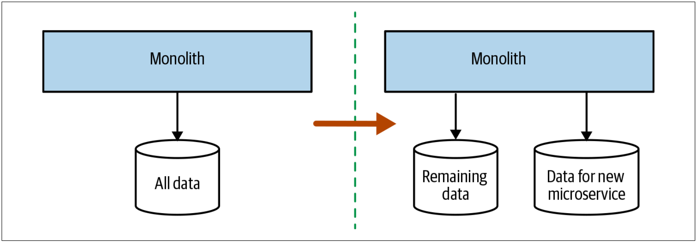
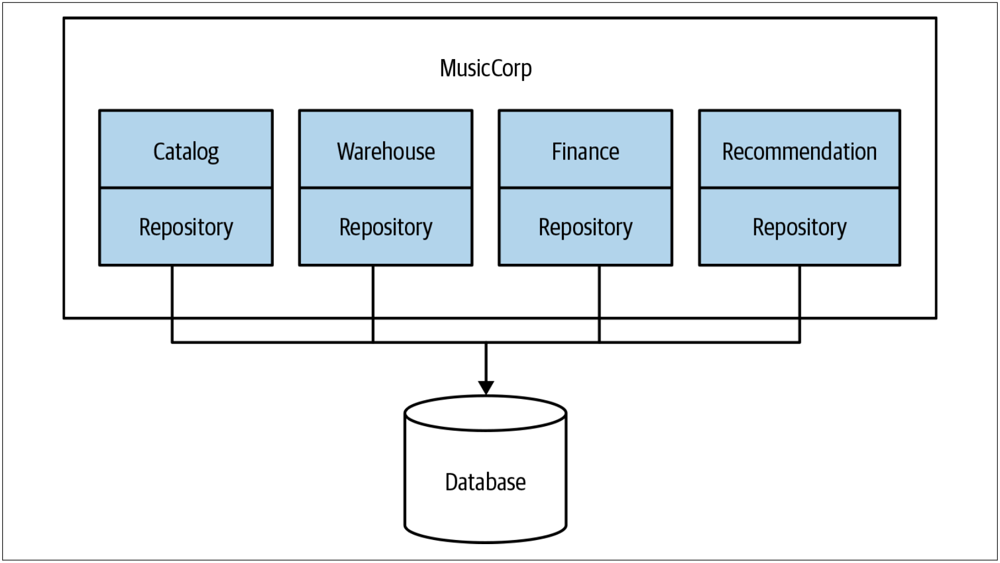

先拆分数据库还是先拆分代码
到目前为止，我们已经讨论了对共享数据库有用的很多模式，并希望转向较少耦合的模型。稍后，我们会详细研究数据库的拆分模式。但是，在此之前，我们需要讨论拆分数据库和拆分代码的顺序。直到应用程序代码运行在其自己的服务中，并将服务控制的数据抽取到服务自己的逻辑隔离数据库，微服务的抽取才算完成。但是，本书主要是关于实现增量变更的，因此，我们必须探索：如何对微服务的抽取过程进行排序的方法。我们有几种选择：
- 先拆分数据库，然后再拆分代码
- 先拆分代码，然后再拆分数据库
- 同时拆分数据库和代码
不同的选择各有利弊。现在，我们来看一下这些选择，并根据所采用的方法，来看一些可能有用的模式。
先拆分数据库
使用分离的schema，执行单个操作时，可能会增加数据库的调用次数。之前，我们可以用单个SELECT语句获得所需的所有数据，而现在，我们需要从两个schema中获取到数据，并在内存中对其进行合并。当我们转而使用两个schema时，最终，我们也破坏了事务的完整性，这可能会对我们的应用程序产生重大影响。本章稍后会讨论这些挑战，本章稍后的内容涵盖了分布式事务和sagas之类的主题，以及它们如何帮助我们解决这些挑战。如图4-26所示，我们拆分了schemas，但并未拆分应用程序的代码。如果我们意识到变更有异常，我们就可以还原变更或继续调整，从而不会影响服务的任何使用者。一旦确信数据库的拆分是合理的，我们就可以考虑将应用程序代码拆分成两个服务。

图4-26. 首先拆分schema可以使我们更早的发现性能和事务完整性方面的问题
另一方面，先拆分数据库的缺点是，该方法很难产生太多的短期利益。 使用该方法时，我们仍然是部署单体代码。可以说，共享数据库的缺点是随着时间的流逝而逐渐显现出来，因此，此刻，我们正在花费时间和精力来获得长期回报，而不是获得足够的短期利益。有鉴于此，只有在特别关心性能或数据一致性问题时，我才会选择先拆分数据库的方法。 还需要考虑的是，如果单体本身是一个黑盒系统，例如一款商业软件，那么我们将无法使用先拆分数据库的方法。
工具说明因为很多原因，修改数据库是一件困难的事，原因之一就是只有有限的工具可以让我们轻松的修改数据库。修改代码时，我们有IDE的内置重构工具；并且，还存在额外的好处，那就是：从根本上讲，我们要修改的系统是无状态的。对于数据库而言，我们要修改的内容是有状态的，同时，我们还缺少良好的重构类工具。
许多年前，这种工具上的空白促使我和两个同事，Nick Ashley和Graham Tackley，开发了一个名为DBDeploy的开源工具。这个工具现在已经不存在了（开发一个开源工具与维护一个开源工具完全不同！），DBDeploy允许捕获修改并将其存入SQL脚本，这些脚本可以以确定性的方式在schema上运行。每个schema都有一个特殊的表，该表用于跟踪已应用了哪些schema脚本。
DBDeploy的目标是允许我们对schema进行增量修改，以控制每个修改的版本，并允许在不同时间修改多个schema（例如开发scheam，测试schema和生产schema）。
如今，我推荐人们使用FlywayDB或提供类似功能的产品，但是无论选择哪种工具，我都强烈建议确保这些工具允许我们捕获版本控制的增量脚本中的每个修改。
每个界定的上下文一个数据持久层
repository的概念
在《企业架构模式》中，译者将repository翻译为资源库，并给出如下说明：通过用来访问领域对象的一个类似集合的接口，在领域与数据映射层之间进行协调。
在《领域驱动设计：软件核心复杂性应对之道》中，译者将repository翻译为仓储，并给出如下说明：一种用来封装存储，读取和查找行为的机制，它模拟了一个对象集合。
而在此处，将repository翻译为资源库或者仓储都不太合适，这会让这个概念越翻译越难以理解。就像把“back pression”翻译成背压一样。
微软的官方文档：Design the infrastructure persistence layer中，是这样定义repository的：
Repositories are classes or components that encapsulate the logic required to access data sources. They centralize common data access functionality, providing better maintainability and decoupling the infrastructure or technology used to access databases from the domain model layer. If you use an Object-Relational Mapper (ORM) like Entity Framework, the code that must be implemented is simplified, thanks to LINQ and strong typing. This lets you focus on the data persistence logic rather than on data access plumbing.
The Repository pattern is a well-documented way of working with a data source. In the book Patterns of Enterprise Application Architecture, Martin Fowler describes a repository as follows:
A repository performs the tasks of an intermediary between the domain model layers and data mapping, acting in a similar way to a set of domain objects in memory. Client objects declaratively build queries and send them to the repositories for answers. Conceptually, a repository encapsulates a set of objects stored in the database and operations that can be performed on them, providing a way that is closer to the persistence layer. Repositories, also, support the purpose of separating, clearly and in one direction, the dependency between the work domain and the data allocation or mapping.
因此，简单而言，此处，repository的含义就是：数据持久层。
一种常见的做法是增加一个数据持久层（repository layer）来把代码和数据库绑定在一起，从而实现把数据库映射成对象或数据结构。数据持久层可以利用类似Hibernate的框架来支持。没有必要为所有的数据访问都创建一个数据持久层，如图4-27所示，可以按照界定的上下文来拆解数据持久层，这很有价值。

图4-27. 拆分数据持久层
给定一个上下文，将数据库的映射代码和该上下文的代码放置在一起，可以帮助我们了解哪些代码位使用了数据库的哪些部分。例如，如果在每个界定的上下文中使用诸如映射文件（mapping file）之类的技术，那么Hibernate可以让我们非常清楚的了解到：哪些代码位使用了数据库的哪些部分。我们可以由此而看到：哪些界定的上下文访问了schema中的哪些表。如上的做法可以帮助我们极大地了解：将来进行任何拆分时需要移动哪些表。
但是，采用数据映射的方法并不能给我们提供全部的线索。例如，我们也许可以判断出finance的代码使用了ledger表，catalog的代码使用了item表；但是，我们可能不清楚数：据库是否存强制实施了从ledger表到item表的外键。数据库级别的约束可能是迁移工作的绊脚石，发现这些数据库级别的约束，我们需要使用另一种工具来可视化数据。非常好的起点是：使用免费的SchemaSpy之类的工具，该工具可以可视化表之间的关系。
如上的方法可以帮助我们了解表之间的耦合，这些耦合可能会跨越未来的服务边界。但是，如何斩断这些耦合？在多个界定的上下文中使用相同的数据表会是什么情况？我们将在本章的稍后部分详细探讨该主题。
何处使用该模式
在我们希望重新修改单体以更好地了解如何拆分单体的任何情况下，为每一个界定的上下文定义一个数据持久层的模式都非常有效。按照领域概念拆分数据持久层会帮助我们了解到：微服务的接缝不仅存在于数据库，而且还存在于代码本身。